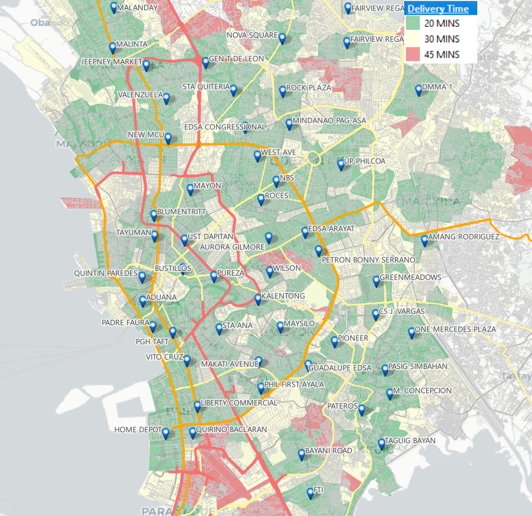
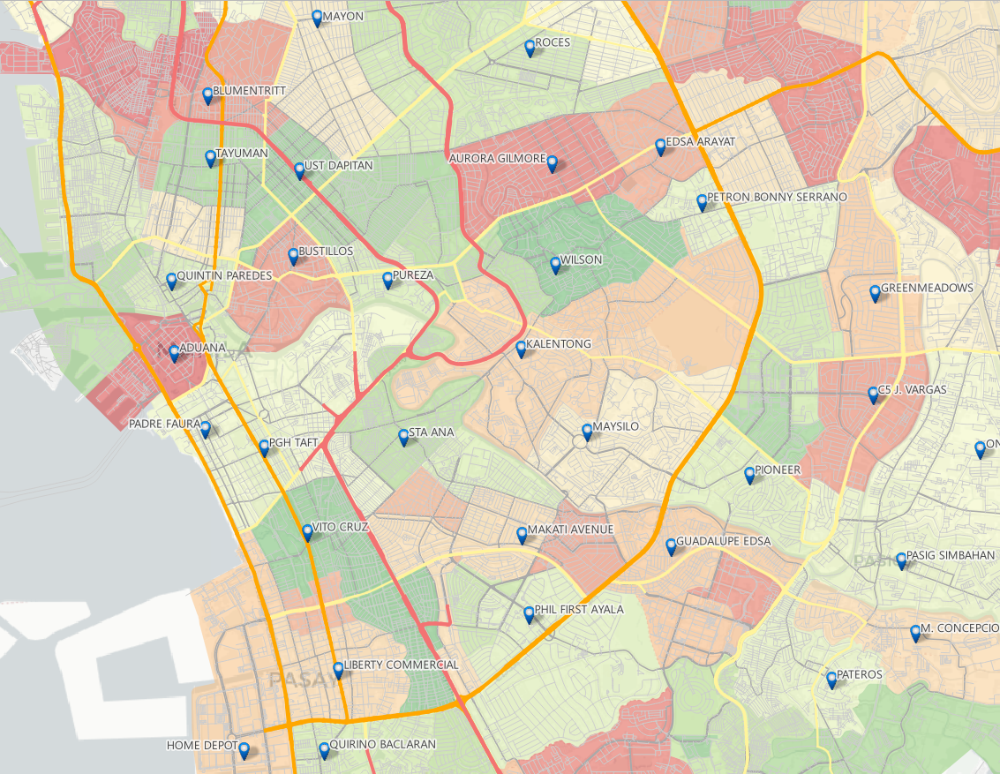
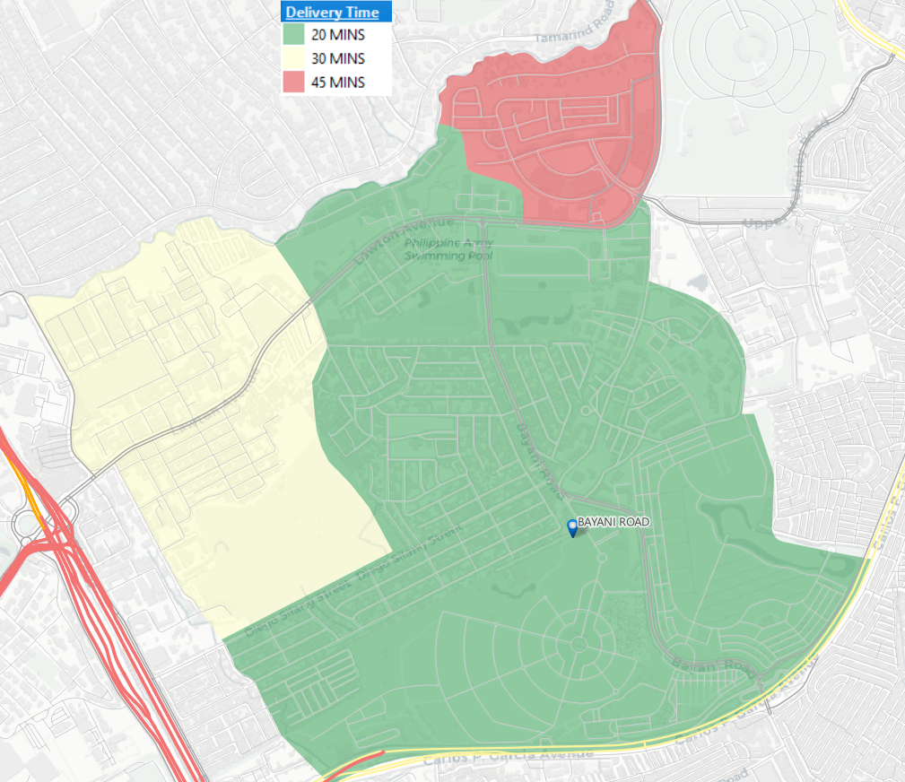
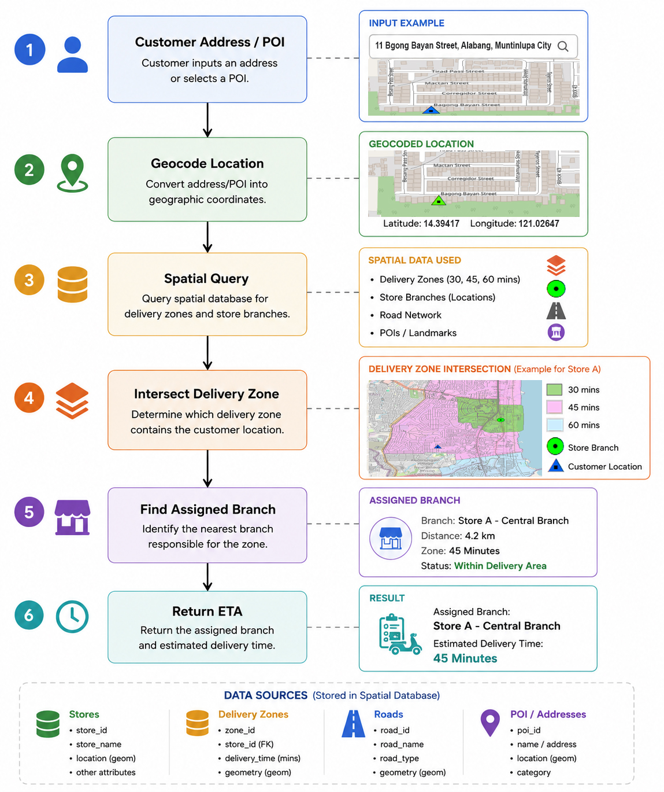

![This flowchart illustrates the end-to-end backend logic of the (RTA) delivery assignment system. The 6-stage process begins with user address geocoding, which is sequentially queried against a spatial database containing localized road networks, store locations, and multi-tiered delivery zones. By performing an automated geometric intersection, the system dynamically identifies the optimal responsible branch, calculates the routing distance, and returns a precise estimated delivery time to the user.](images/project1-rta.jpg)
Project Overview
The Real-Time Delivery Area (RTA) and Branch Assignment System is a GIS-based solution designed to automatically identify the appropriate store branch and estimated delivery time based on a customer's location.
Using service area polygons generated from a road network, the system determines which delivery zone contains the customer address and assigns the corresponding store branch responsible for fulfilling the order.
This solution supports location-based decision-making and helps improve delivery efficiency by automating branch selection and delivery time estimation.
Business Problem
Retail and food delivery businesses often operate multiple branches with overlapping delivery coverage areas. Manually determining which branch should serve a customer can result in:
⚪ Inconsistent branch assignments
⚪ Longer delivery times
⚪ Increased operational costs
⚪ Poor customer experience
The objective of this project is to automate branch assignment and provide accurate delivery time estimates based on geographic location and delivery coverage zones.
Objectives
⚪ Determine the delivery branch based on customer location.
⚪ Estimate delivery time using predefined service areas.
⚪ Automate branch assignment through spatial analysis.
⚪ Reduce manual decision-making.
⚪ Support scalable delivery operations.
⚪ Improve delivery efficiency.